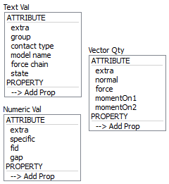
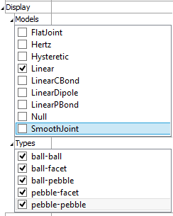
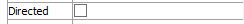
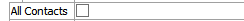

接触
说明
接触渲染为圆盘（仅三维）、圆柱、球体或箭头，并按属性或特性着色。
此绘图项遵循形状/按…着色/颜色选项（Shape/Color By/Color Opt）模式来确定其渲染方式。
属性
形状

从“圆盘”、“圆柱”、“球体”或“箭头”选项中选择用于渲染接触数据的形状。此字段提供的控制项会随所选形状而变化。“圆盘”、“圆柱”和“球体”都提供通用简单控制项（simple controls）的变体。具体的变体见下文说明。“箭头”提供通用的箭头控制项（arrow controls）。
“箭头”形状只能与 按…着色 属性中的“矢量量”项目一起使用。若 形状 设为“箭头”，则 按…着色 中的“文本值”和“数值”选择器将被禁用，并且 按…着色 的设置会自动切换到最近一次（或默认）的“矢量量”选择。
“圆盘”新增一个颜色列表控制项，以及“边数”（在使用切面时细化渲染）、“轮廓”和“切割宽度”（在使用切面时设置线粗细）。
“圆柱”新增一个“比例”控制项，用于收缩项目（1 = 100%，.5 = 50%，等等）。
“球体”新增一个“质量”控制项，用于在使用切面时提高渲染的圆度。
按…着色

指定要渲染该项目的哪一方面，从三个互斥分组中选择（同一时间每个分组中只有一项选择处于活动状态）：文本值、数值 和 矢量量。 若选择了 矢量量，则会新增一个字段，用于指定渲染矢量的是某个分量（\(x\)、\(y\) 或 \(z\)）还是其大小（mag）。
在选择器底部选择 -->Add Prop 将弹出一个对话框，用户可在其中指定要添加到列表中的新特性（并使其成为活动的 按…着色 选择）。
选择器上的 ATTRIBUTE 和 PROPERTY 字样不起任何作用；提供它们只是为了在视觉上区分这两个分组。
| extra | 按 extra 变量着色。额外提供一个字段，用于按索引标识该变量。 |
| 分组 | 按分组着色。额外提供一个字段，用于指定槽位索引。默认设置为 任意（它占据微调框上的索引位置 0）。 |
| 接触类型 | |
| 模型名称 | |
| 力链 | |
| 状态 |
| extra | 按 extra 变量着色。额外提供一个字段，用于按索引标识该变量。 |
| specific | |
| fid | |
| gap | |
| momentOn1 | （仅限二维） |
| momentOn2 | （仅限二维） |
| extra | 按 extra 变量着色。额外提供一个字段，用于按索引标识该变量。 |
| normal | |
| 力 | |
| momentOn1 | （仅限三维） |
| momentOn2 | （仅限三维） |
颜色选项

指定绘图项的着色选项。此项必须设为 scaled（等值线）着色，或基于 named 项目项的着色（例如分组名称）。详情请参见标准的 颜色选项（Color Opt） 控件。
显示

为各接触模型和/或接触类型设置显示的关闭/开启。
显示：模型列表和类型列表的容器。
模型：模型列表的容器。
[item]：显示该模型（勾选时），其中 [Item] 为模型名称。类型：类型列表的容器。
item：显示该接触类型（勾选时），其中 [item] 为接触类型名称。
按大小缩放

勾选后，对象渲染将根据 按…着色 属性中所选 矢量量 的大小进行缩放。
映射

根据所提供的设置变换绘图项的方向、位置或比例。例如，此属性允许将同一绘图项的多个不同可视化实例相邻渲染。
轴序：指定要使用的坐标变换，假定正常顺序为 {2D 中为 XY；3D 中为 XYZ}（例如，XZY 表示 Y 和 Z 坐标互换）。
平移：按指定的模型单位平移所渲染对象的 {2D 中为 \(x\) 和 \(y\)；3D 中为 \(x\)、\(y\) 和 \(z\)} 位置。
比例：将绘图项大小设为程序窗口大小的指定百分比。
定向

设置渲染方向。
定向：沿矢量方向渲染对象（勾选时）。
所有接触

设置显示哪些接触。
所有接触：显示所有接触（勾选时。若取消勾选，则仅显示活动接触。
接触模型法向

设置接触模型法向的显示。若 形状 设为“箭头”，则此属性不可用。
接触模型法向：若存在接触模型法向，则显示它（勾选时）。否则显示接触法向。
透明度

设置绘图项的透明度。此设置不适用于二维模型对象。
透明度：为项目应用透明度（勾选时）。开启时，透明度设为默认值 70，并处于“锁定”状态。锁定时，可用的透明度范围被限制在 70（最低，略有透明）到 100（最高，完全不可见）。要访问完整的透明度取值范围（0-100），请按下锁形图标以“解锁”透明度范围；图标会随之改变（
）。
使用帮助按钮可获取有关此特定属性的帮助。
注意
应当提醒用户：低于 70 的值往往“更不透明”得难以察觉，并且可能导致深度透视看起来奇怪或不正确。
图例
设置该项在绘图图例中的显示。所有绘图项至少都具有 标题 属性。
图例：在图例中显示（勾选）有关该绘图项的所有信息。
标题：在图例中显示（勾选）该绘图项的标题。“别名：”字段可用于为该绘图项指定自定义标题。
大小：设置图例中文本的大小。
字体：设置文本所用的字体面。
样式：设置文本样式（选项为常规、粗体、斜体、粗斜体）。
颜色：设置文本颜色。
| 这些内容对您有帮助吗？… 版权与免责声明 | FLAC3D © 2019, Itasca | 原文更新于 2020 年 10 月 8 日 |